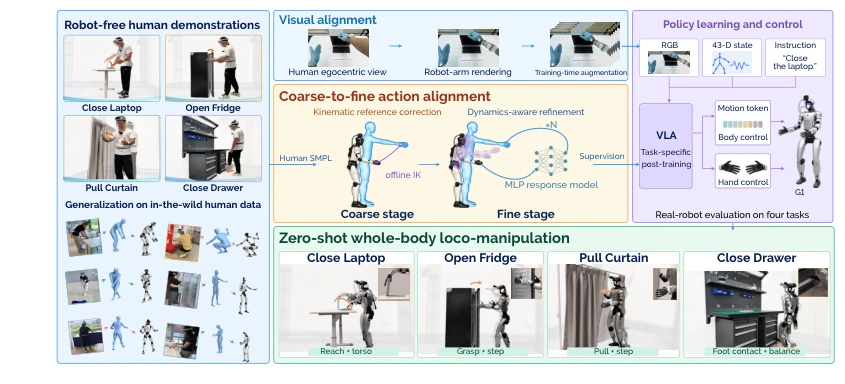
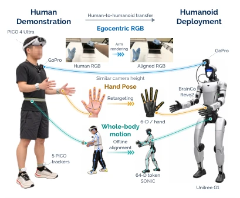
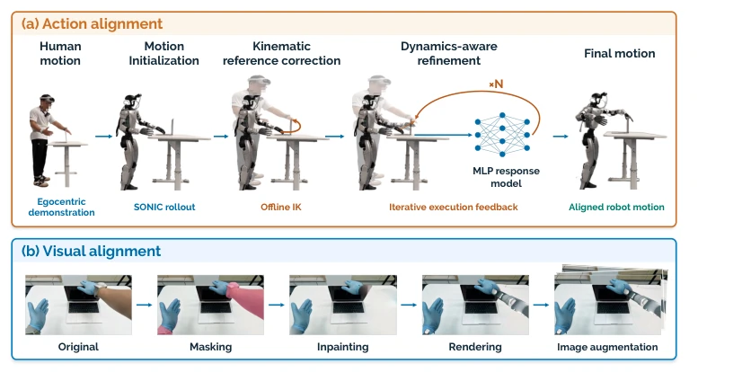
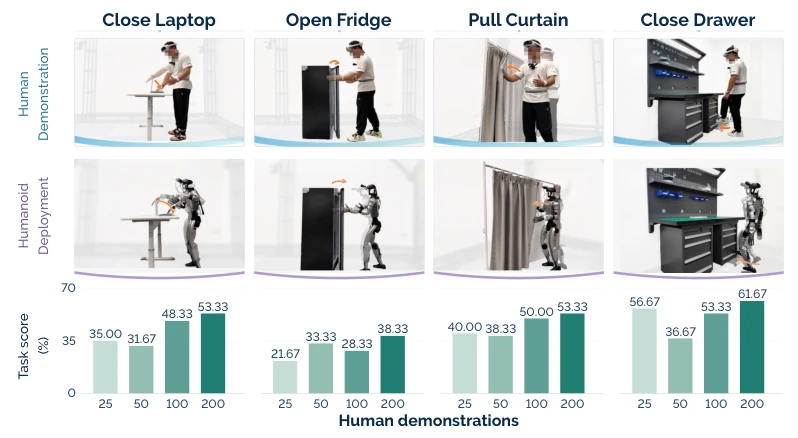
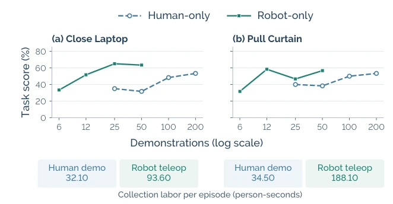
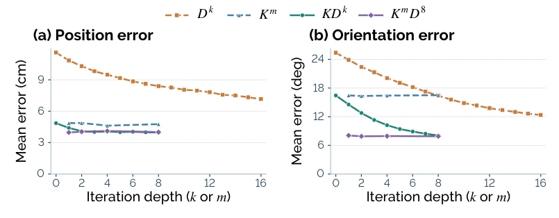
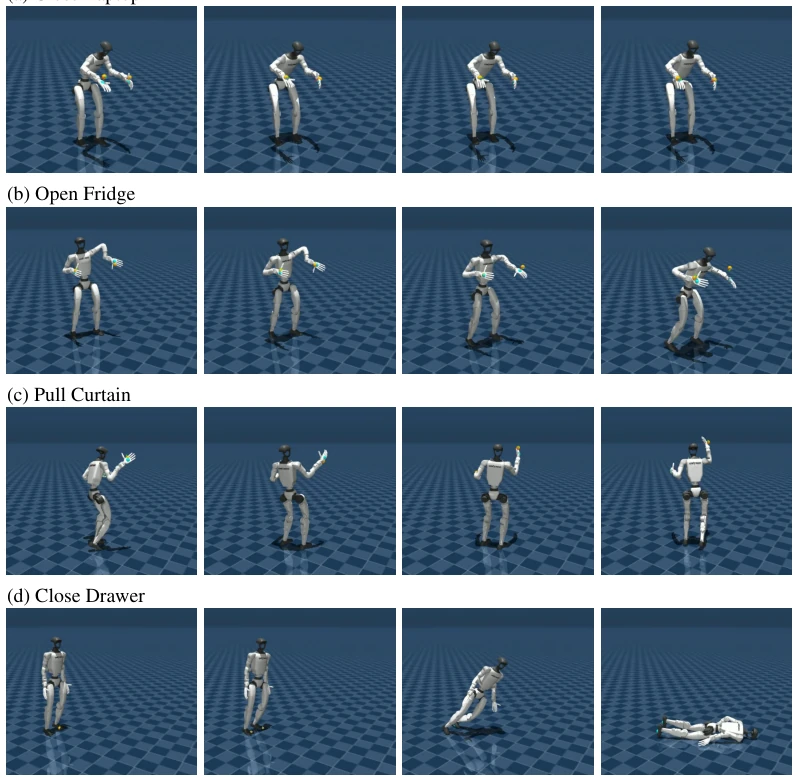
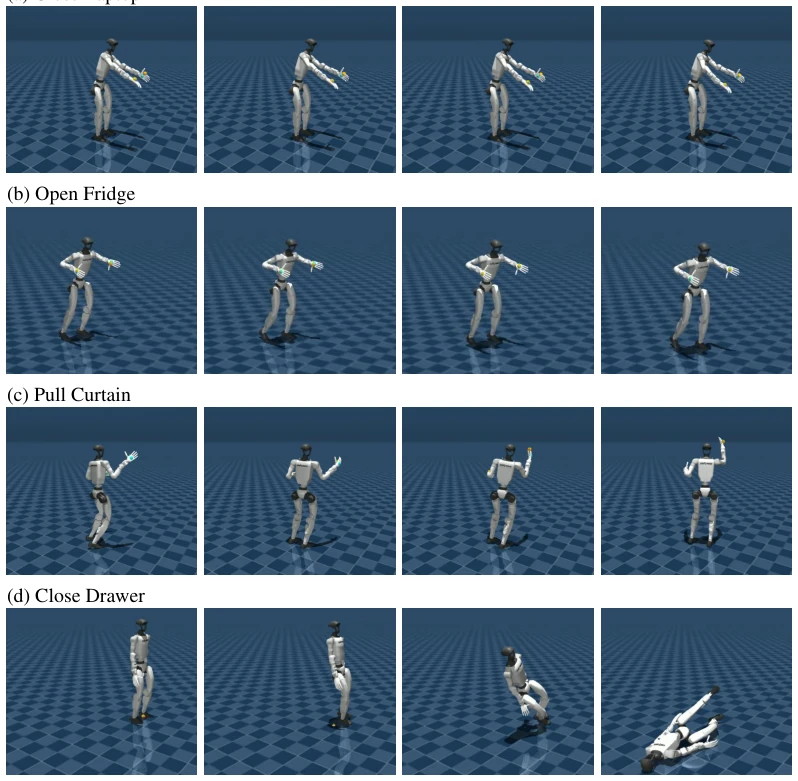
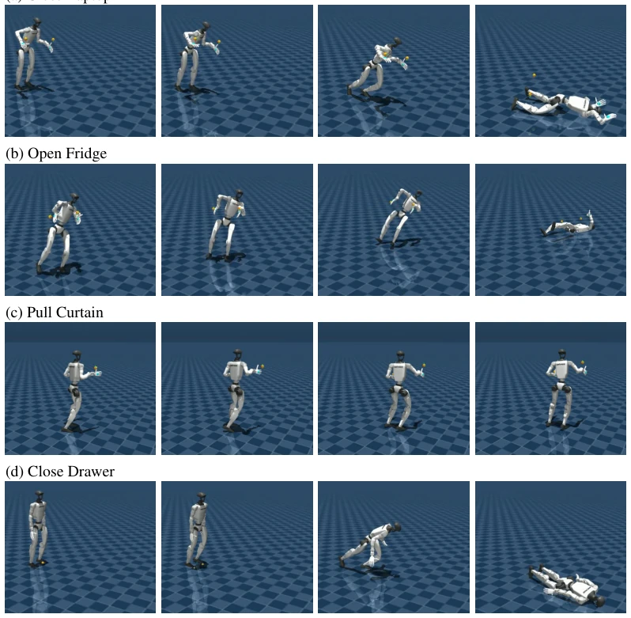
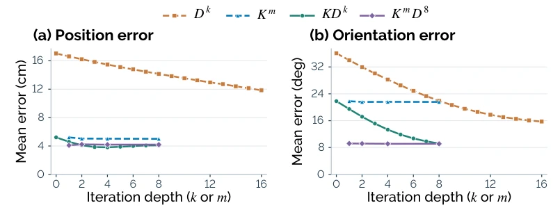

This work attempts to bridge the "embodiment gap" of humanoid robots using human demonstrations. Although claiming "zero-shot", the essence lies in trading offline alignment for human labor. The highlight is the first realization of full-body coordinated loco-manipulation transfer under an egocentric perspective, which is more natural than simple hand manipulation or decoupled control, resolving the contradiction between balance and interaction. The drawbacks are also evident: the throughput of offline IK and multiple simulation rollouts is a potential issue, and "zero-shot" primarily refers to the policy training phase, while the data preparation phase involved considerable effort. For scenarios pursuing real-time performance, this pipeline may appear somewhat cumbersome, but as a paradigm for low-cost data utilization, it is indeed commendable, though one should not expect it to run on a mobile phone.
研究动机Motivation
人类示范成本低且场景丰富，但具身鸿沟导致直接迁移困难。现有工作如 UMI (Chi et al., 2024) 或 VR 捕捉 (Yuan et al., 2026) 多关注双手操作或导航，忽略了全身协调。解耦控制器 (Ben et al., 2025) 在 loco-manipulation 中容易破坏平衡。直接追踪人类参考会导致末端误差大 (Table 1)。需要一种能保持全身协调同时提高交互精度的方法，避免在线 IK 导致的跌倒风险 (Appendix D)。EgoHumanoid-V2 试图通过离线对齐解决这些问题，但代价是计算开销。
Human demonstrations offer low cost and rich scenarios, but the embodiment gap makes direct transfer difficult. Existing works such as UMI (Chi et al., 2024) or VR capture (Yuan et al., 2026) mostly focus on bimanual manipulation or navigation, neglecting full-body coordination. Decoupled controllers (Ben et al., 2025) tend to disrupt balance during loco-manipulation. Directly tracking human references results in large end-effector errors (Table 1). A method is needed that maintains full-body coordination while improving interaction accuracy, avoiding fall risks caused by online IK (Appendix D). EgoHumanoid-V2 attempts to address these issues through offline alignment, but at the expense of computational overhead.

Figure 1: Introducing EgoHumanoid-V2, the first egocentric human-to-humanoid skill transfer framework for coordinated whole-body loco-manipulation. Robot teleoperation is costly and hard to scale across environments, while human demonstrations capture diverse scenes and coordinated whole-body skills. Action and visual alignment bridge the embodiment gap for VLA training. Four real-world tasks demonstrate zero-shot skill transfer without target-task robot demonstrations.

Figure 2: Hardware for human demonstration capture and humanoid deployment.
方法Method
核心是动作对齐 (Action Alignment) 和视觉对齐 (Visual Alignment)。动作分三阶段：H (SONIC rollout 初始化), K (离线 IK 几何校正), D (动力学感知微调，用 MLP 预测执行反馈)。视觉上用 SAM2 分割手臂，DiffuEraser 修复背景，再渲染机器人手臂。最后用 π0.5 策略微调。动作对齐中，K 阶段减少几何失配，D 阶段利用 MLP 响应模型迭代优化末端跟踪，保留全身协调。视觉对齐通过渲染机器人手臂和图像增强，缩小训练与部署的视角差异。整个流程将人类数据转化为机器人可执行的 VLA 训练对，确保策略能直接部署。具体而言，D 阶段通过迭代 rollout 反馈，利用 MLP 预测运动学变化对执行的影响，从而补偿残差，相比单纯 IK 更能保持动力学可行性。该方法避免了在线 IK 导致的平衡破坏，实现了从人类示范到机器人动作的精确映射。
The core consists of Action Alignment and Visual Alignment. Actions are divided into three stages: H (SONIC rollout initialization), K (offline IK geometric correction), and D (dynamics-aware fine-tuning, using MLP to predict execution feedback). Visually, SAM2 segments the arms, DiffuEraser repairs the background, and then the robot arms are rendered. Finally, π0.5 policy fine-tuning is applied. In action alignment, the K stage reduces geometric mismatch, while the D stage utilizes the MLP to respond to model iteration optimization of end-effector tracking, preserving full-body coordination. Visual alignment narrows the perspective differences between training and deployment by rendering robot arms and performing image enhancement. The entire process converts human data into robot-executable VLA training pairs, ensuring the policy can be deployed directly. Specifically, the D stage utilizes iterative rollout feedback, using the MLP to predict the impact of kinematic changes on execution, thereby compensating for residuals; compared to simple IK, it better maintains dynamic feasibility. This method avoids balance disruption caused by online IK, achieving precise mapping from human demonstrations to robot actions.

Figure 3: Action and visual alignment pipelines. (a) Human motion initializes a robot trajectory through a SONIC rollout (H). Offline IK corrects the reference geometry (K), and dynamics-aware refinement (D) uses an MLP response model and iterative execution feedback to produce aligned robot motion. (b) Human forearms and wrist trackers are masked and inpainted, then replaced with rendered robot arms. Image augmentation produces varied training views.
实验Experiments
4 个真实任务 (Close Laptop 等)。200 次人类示范，平均分 51.67%。成本比遥操作低 76.36%。消融实验显示 K+D 比单独 K 或 D 好。视觉渲染和增强互补。在线 IK 会导致跌倒 (Fig 8-10)。在 Close Laptop 和 Pull Curtain 任务上，人类数据接近遥操作性能，但需要更多样本。实验证明了人类数据作为直接技能监督的可行性，尽管精度略低于遥操作。
4 real tasks (Close Laptop, etc.). 200 human demonstrations, with an average score of 51.67%. The cost is 76.36% lower than teleoperation. Ablation studies show that K+D performs better than K or D alone. Visual rendering and enhancement are complementary. Online IK leads to falls (Fig 8-10). On the Close Laptop and Pull Curtain tasks, human data approaches teleoperation performance, but requires more samples. The experiments demonstrate the feasibility of human data as direct skill supervision, although the accuracy is slightly lower than teleoperation.

Figure 4: Q1: Skill transfer on four real-world tasks. Each task column shows human demonstra- tions (top), humanoid motion illustrations (middle), and task scores with 25, 50, 100, or 200 human demonstrations (bottom). Policies use no target-task robot demonstrations.

Figure 5: Task scores and collection labor with human or robot demonstrations. Each point represents an independently trained policy evaluated over 20 trials. Human-only results reuse Fig- ure 4. Cost strips include capture, setup, calibration, troubleshooting, and resets.

Figure 6: Complementarity and depth of K and D. Task-macro averages of raw stage outputs for Dk, repeated Km, KDk, and KmD8. Position averages four tasks; orientation averages the three hand tasks. Protocol and processing costs appear in Appendix C.4.

Figure 8: Online-IK instability: variant A (IK without balance overlay). Each row follows one continuous segment from left to right, selected by peak base tilt as described in Appendix D.3. A fixed crop within each sequence preserves relative motion and keeps robot scale comparable across tasks. Close Drawer ends in an initialization fall. Task objects are omitted.

Figure 9: Online-IK instability: variant B (IK with SONIC balance overlay). Each row follows one continuous segment from left to right, selected by peak base tilt as described in Appendix D.3. A fixed crop within each sequence preserves relative motion and keeps robot scale comparable across tasks. Close Drawer ends in an initialization fall. Task objects are omitted.

Figure 10: Online-IK instability: variant C (restricted IK joint control). Each row follows one continuous segment from left to right, selected by peak base tilt as described in Appendix D.3. A fixed crop within each sequence preserves relative motion and keeps robot scale comparable across tasks. Close Drawer ends in an initialization fall. Task objects are omitted.
其他图片Other Figures

Figure 7: Refinement depth on the expanded benchmark. Task-equal averages of raw stage outputs for Dk, repeated Km, KDk, and KmD8 on paired trajectories.